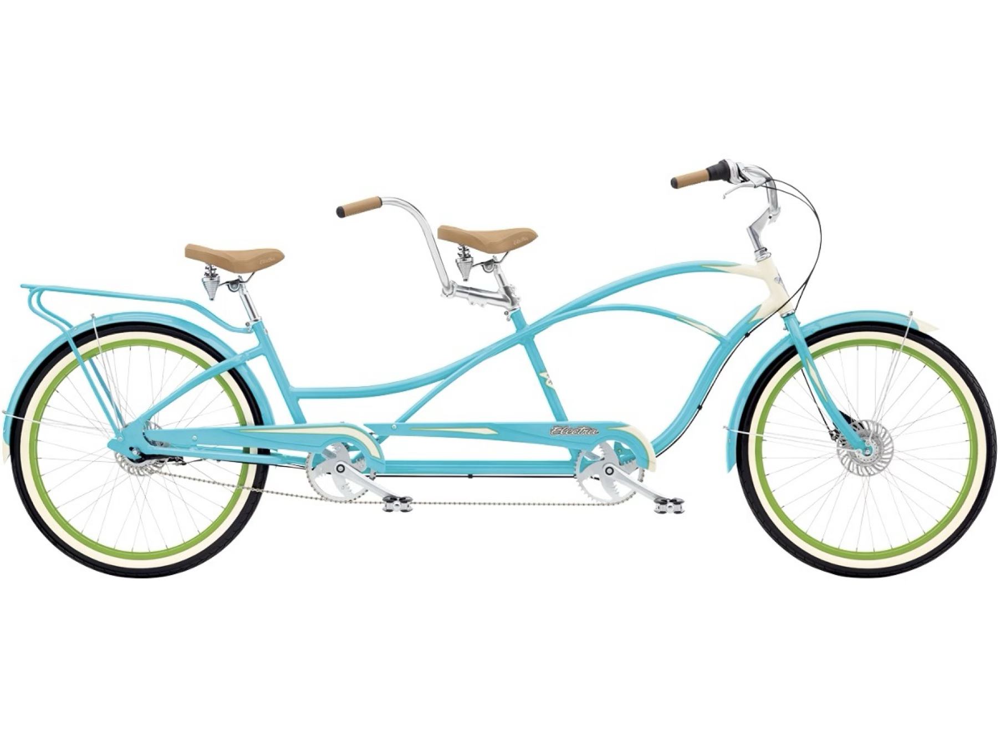

Lecture 11
Farmingdale State College
Correlation ≠ Causation
r
Positive correlation: variables move together
As one goes up, the other goes up.
As one goes down, the other goes down.
Assesses how two variables move in relation to one another.
library(ggplot2)
library(dplyr)
library(MASS)
library(patchwork)
# Load necessary libraries
set.seed(123) # For reproducibility
# Function to simulate two variables with a specific correlation
generate_correlation <- function(n, rho) {
# Define the mean and covariance matrix
mean_vector <- c(0, 0)
covariance_matrix <- matrix(c(1, rho, rho, 1), nrow = 2)
# Generate correlated data using mvrnorm from the MASS package
data <- mvrnorm(n = n, mu = mean_vector, Sigma = covariance_matrix)
# Convert to a data frame
data_frame <- data.frame(X = data[, 1], Y = data[, 2])
return(data_frame)
}
# Example: Generate data with a correlation of 0.7
n <- 100 # Number of data points
rho <- 0.7 # Desired correlation
data <- generate_correlation(n, rho)
# Verify the correlation
cor(data$X, data$Y)
# Plot the data
p1 <-
ggplot(data, aes(x = X, y = Y)) +
geom_point() +
labs(
title = "Positive Correlation") +
theme_minimal() +
geom_smooth(
method = "lm",
se = FALSE,
color = "red",
alpha = .3) +
theme_classic() +
theme(
axis.text = element_blank(),
axis.title = element_blank()
)
# Example: Generate data with a correlation of 0.7
n <- 100 # Number of data points
rho <- -0.7 # Desired correlation
data <- generate_correlation(n, rho)
p2 <-
ggplot(data, aes(x = X, y = Y)) +
geom_point() +
labs(
title = "Negative Correlation") +
theme_minimal() +
geom_smooth(
method = "lm",
se = FALSE,
color = "red",
alpha = .3) +
theme_classic() +
theme(
axis.text = element_blank(),
axis.title = element_blank()
)
# Example: Generate data with a correlation of 0.7
n <- 100 # Number of data points
rho <- 0.01 # Desired correlation
data <- generate_correlation(n, rho)
p3 <-
ggplot(data, aes(x = X, y = Y)) +
geom_point() +
labs(
title = "No Correlation") +
theme_minimal() +
geom_smooth(
method = "lm",
se = FALSE,
color = "red",
alpha = .3) +
theme_classic() +
theme(
axis.text = element_blank(),
axis.title = element_blank()
)
p1 + p2 + p3What are measures of dispersion?
Measures of how spread out the data are, how much participants differ.
How do we measure dispersion when we were looking at one variable?
Standard deviation
Variance
Univariate = one variable
Bivariate = two variables
Multivariate = more than two variables
Univariate = one variable
Bivariate = two variables
Multivariate = more than two variables
Univariate measures of dispersion?
Bivariate measures of dispersion:
Covariance
How much variation in one variable is the same in another variable?
Do the variables vary in the same way?
Univariate measures of dispersion?
Standard deviation: Height M = 5'6", s = 2 inches
Bivariate measures of dispersion:
Professor Brocker wants to know if how many cups of coffee a professor drinks daily impacts their happiness. She asks 50 professors how many cups they have in a typical day and then has them rate their happiness on a scale of 1 to 10.
Variable 1: Number of Cups of Coffee = continuous
Variable 2: Happiness = continuous
We could:
Find the variance of each variable
Find the covariance of the two variables together
Covariance refers to how two continuous variables vary in tandem.
Covariance refers to how two variables vary together:
Generally, if cups of coffee goes up, what does happiness tend to do?
Generally, if happiness goes up, what does cups of coffee tend to do?
Professor Brocker wants to know if how many cups of coffee a professor drinks daily impacts their happiness. She asks 50 professors how many cups they have in a typical day and then has them rate their happiness on a scale of 1 to 10.
Variable 1: Number of Cups of Coffee
Variable 2: Happiness
\[ COV_{XY} = \frac{\Sigma(X-\bar{X}(Y-\bar{Y})}{N-1} \]
\[ COV_{XY} = \frac{\Sigma(X-\bar{X}(Y-\bar{Y})}{N-1} \]
\[ s^2 = \frac{\Sigma(X-\bar{X})^2}{N-1} \]
\[ COV_{XY} = \frac{\Sigma(X-\bar{X}(Y-\bar{Y})}{N-1} \]
\[ s^2 = \frac{\Sigma(X-\bar{X})^2}{N-1} = \frac{\Sigma(X-\bar{X})(X-\bar{X})}{N-1} \] ## Covariance
The variance of a variable is the covariance of that variable with itself.
\[ COV_{XY} = \frac{\Sigma(X-\bar{X}(Y-\bar{Y})}{N-1} \]
Covariance is the variance of two variables together… how they move together.
\[ COV_{XY} = \frac{\Sigma(X-\bar{X})(Y-\bar{Y})}{N-1} \]
Let’s break it down.
\[\bar{X} = \frac{\Sigma(x)}{n}\] \[\bar{Y} = \frac{\Sigma(Y)}{n}\] ## Covariance
Let’s break it down.
Find the mean of each variable.
Subtract the mean of x from each x value.
Subtract the mean of y from each y value.
\[(X-\bar{X})\] \[(Y-\bar{Y})\]
Let’s break it down.
Find the mean of each variable.
Subtract the mean of x from each x value.
Subtract the mean of y from each y value.
Multiple the deviation scores of x with the deviation scores of y.
\[(X-\bar{X})(Y-\bar{Y})\]
Let’s break it down.
Find the mean of each variable.
Subtract the mean of x from each x value.
Subtract the mean of y from each y value.
Multiple the deviation scores of x with the deviation scores of y.
Sum the products of the deviation scores.
\[\sum(X-\bar{X})(Y-\bar{Y})\]
Let’s break it down.
Find the mean of each variable.
Subtract the mean of x from each x value.
Subtract the mean of y from each y value.
Multiple the deviation scores of x with the deviation scores of y.
Sum the products of the deviation scores.
Divide by N-1.
\[\frac{\sum(X-\bar{X})(Y-\bar{Y})}{N-1}\]
Covariance is the bivariate equivalent of variance.
What does the covariance tell us?
What did the variance tell us?
For it to be useful, we had to standardize it.
\[ COV_{XY} = \frac{\Sigma(X-\bar{X})(Y-\bar{Y})}{N-1} \] ## Correlation
Correlation is the standardized covariance.
Correlation is the bivariate version of the standard deviation.
To calculate the correlation, we divide the covariance by the standard deviation of x multipled by the standard deviation of y.
\[\frac{cov_{xy}}{(SD_x)(SD_y)}\]
Calculating Correlation:
\[ COV_{XY} = \frac{\Sigma(X-\bar{X})(Y-\bar{Y})}{N-1} \] \[\frac{cov_{xy}}{(SD_x)(SD_y)}\] ## Correlation
Calculating Correlation:
\[ \frac{\Sigma(X-\bar{X})(Y-\bar{Y})}{(SD_x)(SD_y)(N-1)} \]
Correlation is the bivariate version of the standard deviation.
\[ \frac{\Sigma(X-\bar{X})(Y-\bar{Y})}{(SD_x)(SD_y)(N-1)} \]
Correlation is bounded between -1 and +1.
Closer to -1 is a negative correlation.
Closer to +1 is a positive correlation.
Closer to 0 means no correlation.
This is the Pearson Product-Moment Correlation (Pearson, 1895).
The sign indicates the direction.
The number indicates the magnitude/strength of the relationship.
0.1 is a small correlation
0.3 is a moderate correlation
0.5 or higher is a large correlation
Correlation is written as r
If we square r, we get \(R^2\)
\(R^2\) is always positive
\(R^2\) refers to:
The amount of x accounted for by y.
The amount of y accounted for by x.
Example: Students grades in MTH 110 and their grades in correlation at r = 0.3
Moderate correlation
How much of your grade is accounted for by your MTH 110 grade?
0.3 x 0.3 = 0.09
\(R^2\) = 9% of your grade is explained by your MTH 110 grade.
We don’t use the words caused/resulting from.
When reporting r: “As x goes up, y tends to go up.”
When reporting R^2: “z% of x is accounted for by y.”
In the Method, we report descriptive statistics about our variables (M, s).
It is common to refer readers to a table where they can look at correlations between the variables.
In the Method, we report descriptive statistics about our variables (M, s).
It is common to refer readers to a table where they can look at correlations between the variables.
Table 1 in a paper is typically a combination of descriptive stats AND correlation matrix, like this:
Table 1 in a paper is typically a combination of descriptive stats AND correlation matrix, like this: